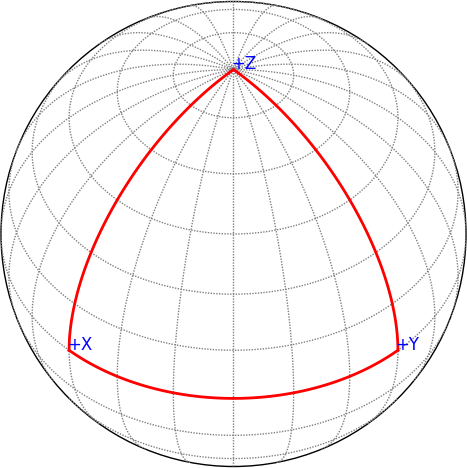
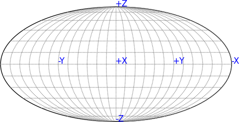

The code linked below shows how to project the Cartesian unit vectors onto a sphere. This is useful, for example, if you want to show the angular distribution of a bunch of points in a calculation of a star done in Cartesian coordinates. The radius is neglected here, and only the spherical angles are used to locate the point on our reference sphere.
The key bit is the function at the top that converts x,y,z to longitude and latitude. Note: latitude is different than the usual spherical theta angle (that is colatitude).
This script shows both an octant and a full star projection.

